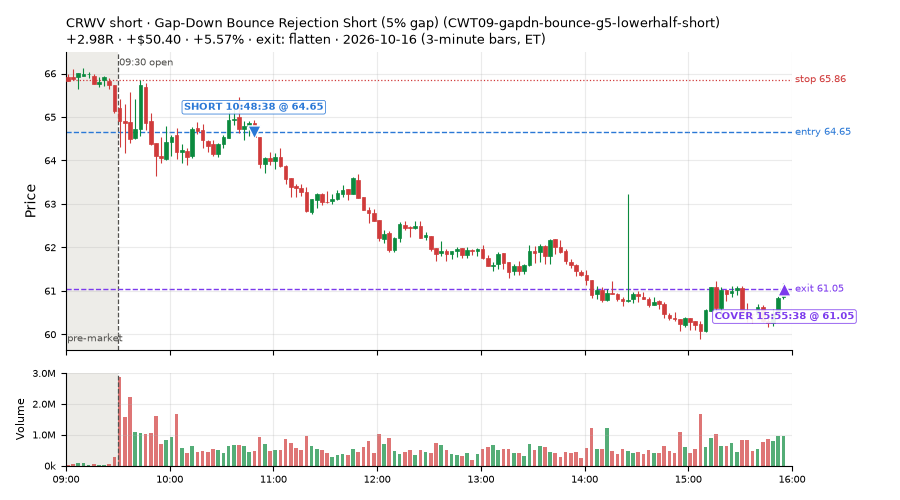
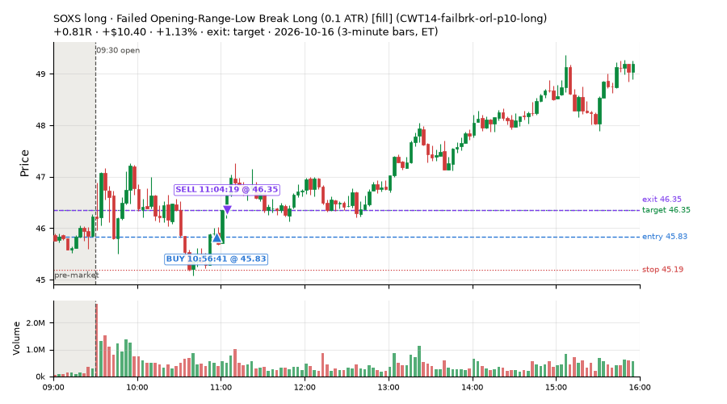
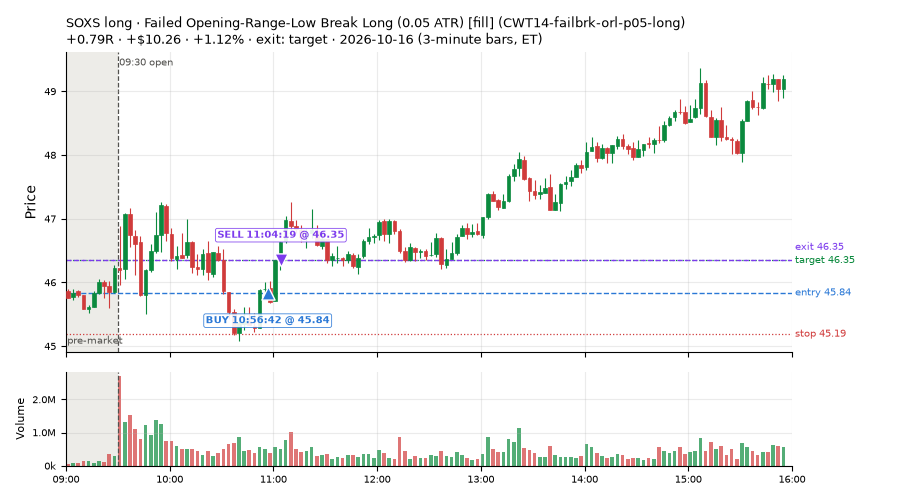
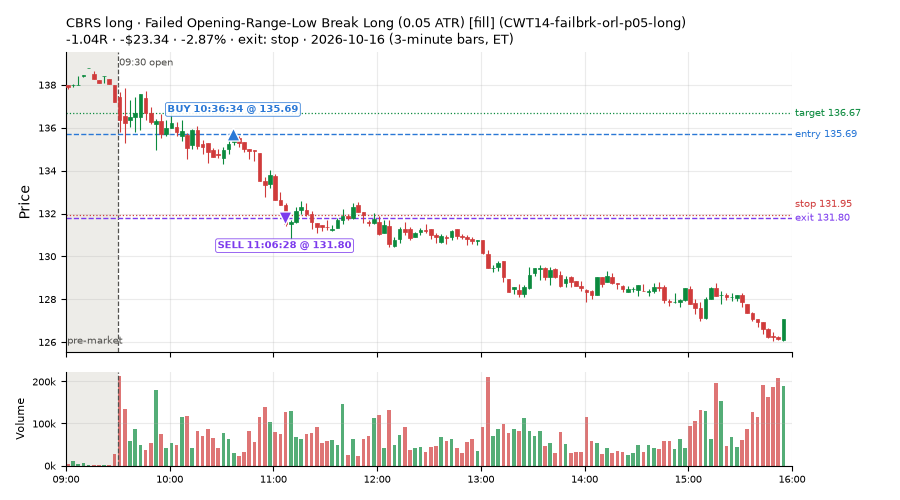
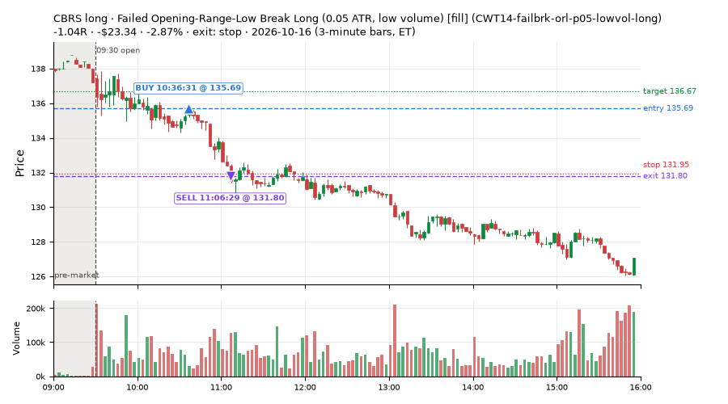
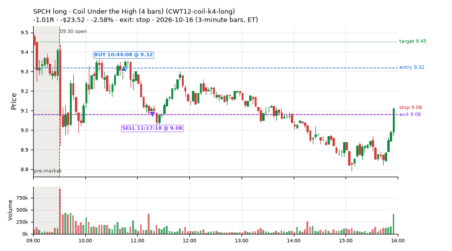
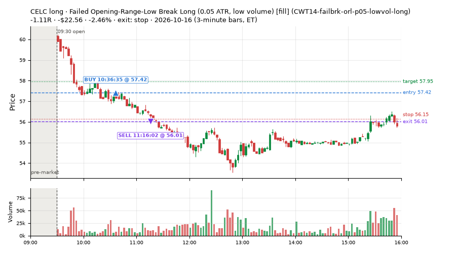
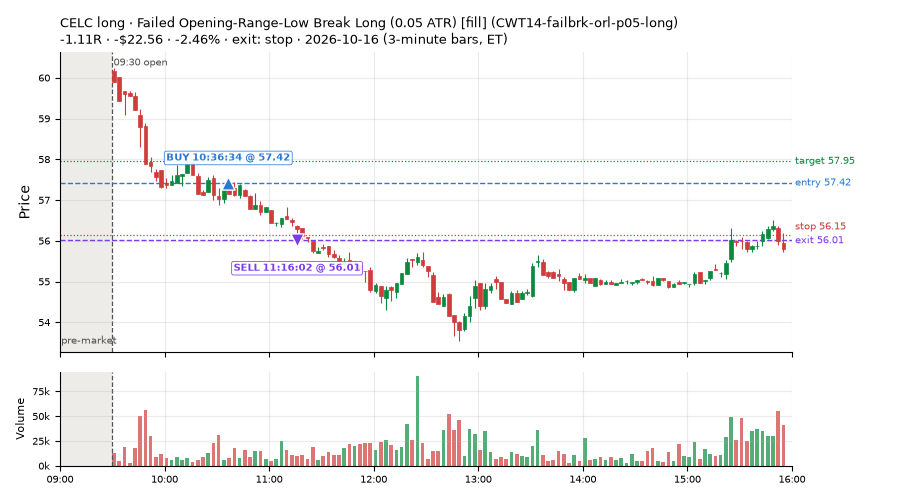

388 trades · win rate 54% · P/L $-982.49
PROBATION: no live setup has passed both locked test periods. 10 owner-directed setups added 2026-10-08 (MarcoFlow top 5 + 5 new), untested live. RW6G1 (RW6 + VWAP band guard) added 2026-10-09, probation.

| Symbol | Setup | Side | In | Out | Entry | Exit | Exit reason | % gained | P/L |
|---|---|---|---|---|---|---|---|---|---|
| CRWV | Gap-Down Bounce Rejection Short (5% gap) (CWT09-gapdn-bounce-g5-lowerhalf-short) | short | 10:48 | 15:55 | 64.65 | 61.05 | flatten | +5.57% | $50.40 |
| SOXS | Failed Opening-Range-Low Break Long (0.1 ATR) [fill] (CWT14-failbrk-orl-p10-long) | long | 10:56 | 11:04 | 45.83 | 46.35 | target | +1.13% | $10.40 |
| SOXS | Failed Opening-Range-Low Break Long (0.05 ATR) [fill] (CWT14-failbrk-orl-p05-long) | long | 10:56 | 11:04 | 45.84 | 46.35 | target | +1.12% | $10.26 |
| Symbol | Setup | Side | In | Out | Entry | Exit | Exit reason | % lost | P/L |
|---|---|---|---|---|---|---|---|---|---|
| CBRS | CWT14-failbrk-orl-p05-long | long | 10:36 | 11:06 | 135.69 | 131.80 | stop | -2.87% | $-23.34 |
| CBRS | CWT14-failbrk-orl-p05-lowvol-long | long | 10:36 | 11:06 | 135.69 | 131.80 | stop | -2.87% | $-23.34 |
| SPCH | CWT12-coil-k4-long | long | 10:44 | 11:17 | 9.32 | 9.08 | stop | -2.58% | $-23.52 |
| CELC | CWT14-failbrk-orl-p05-lowvol-long | long | 10:36 | 11:16 | 57.42 | 56.01 | stop | -2.46% | $-22.56 |
| CELC | CWT14-failbrk-orl-p05-long | long | 10:36 | 11:16 | 57.42 | 56.01 | stop | -2.46% | $-22.56 |








Signal to fill: median 1s, 90th percentile 3s (388 trades). Bars close each minute; the order follows the bar close.
Best excursion (MFE): median 0.30R; worst (MAE) median 0.70R. 39% of trades never got +0.25R in our favour; 2 reached +1R and still closed at or below 0.
| Symbol | Setup | Best R | Worst R | Closed R |
|---|---|---|---|---|
| DBX | CWT14-failbrk-pdl-p05-long | +1.00 | -1.10 | -1.20 |
| DBX | CWT14-failbrk-pdl-p05-lowvol-long | +1.00 | -1.10 | -1.20 |
| A | CWT14-failbrk-orl-p05-lowvol-long | +0.79 | -1.13 | -1.24 |
| A | CWT14-failbrk-orl-p05-long | +0.79 | -1.13 | -1.24 |
| NYT | CWT14-failbrk-orl-p05-lowvol-long | +0.53 | -1.41 | -1.41 |
| Entry time | Trades | Win | Avg R | P/L |
|---|---|---|---|---|
| 09:50-10:30 | 231 | 52% | -0.28 | $-547.67 |
| 10:30-11:30 | 157 | 57% | -0.21 | $-434.82 |
| Setup | Trades | Win | Avg R | Adj R (net of SPY) | P/L |
|---|---|---|---|---|---|
| Gap-Down Bounce Rejection Short (5% gap) (CWT09-gapdn-bounce-g5-lowerhalf-short) | 1.0 | 100% | +2.98 | +2.33 | $50.40 |
| Gap-Down VWAP Loss Short (5% gap) (CWT09-gapdn-vwaploss-g5-short) | 1.0 | 0% | -1.03 | -1.03 | $-8.27 |
| Coil Under the High (4 bars) (CWT12-coil-k4-long) | 22.0 | 27% | -0.64 | -0.49 | $-238.50 |
| Coil Under the High (6 bars) (CWT12-coil-k6-long) | 5.0 | 20% | -0.65 | -0.52 | $-29.83 |
| Stretched Below VWAP Bounce (far) (CWT13-vwapstretch-z075-long) | 2.0 | 50% | -0.10 | -0.14 | $-0.09 |
| Failed Opening-Range-Low Break Long (0.05 ATR) [fill] (CWT14-failbrk-orl-p05-long) | 60.0 | 52% | -0.28 | -0.22 | $-195.79 |
| Failed Opening-Range-Low Break Long (0.05 ATR, low volume) [fill] (CWT14-failbrk-orl-p05-lowvol-long) | 64.0 | 47% | -0.38 | -0.29 | $-255.06 |
| Failed Opening-Range-Low Break Long (0.1 ATR) [fill] (CWT14-failbrk-orl-p10-long) | 39.0 | 49% | -0.30 | -0.19 | $-111.92 |
| Failed Opening-Range-Low Break Long (low volume) (CWT14-failbrk-orl-p10-lowvol-long) | 31.0 | 42% | -0.41 | -0.26 | $-108.55 |
| Failed Prior-Day-High Break Short (0.05 ATR, low volume) [fill] (CWT14-failbrk-pdh-p05-lowvol-short) | 45.0 | 76% | +0.07 | -0.16 | $31.84 |
| Failed Prior-Day-High Break Short (low volume) (CWT14-failbrk-pdh-p10-lowvol-short) | 25.0 | 64% | -0.15 | -0.27 | $5.95 |
| Failed Prior-Day-High Break Short (0.1 ATR) [fill] (CWT14-failbrk-pdh-p10-short) | 42.0 | 76% | +0.06 | -0.03 | $52.34 |
| Failed Prior-Day-Low Break Long (shallow) (CWT14-failbrk-pdl-p05-long) | 16.0 | 56% | -0.29 | -0.22 | $-27.97 |
| Failed Prior-Day-Low Break Long (0.05 ATR, low volume) [fill] (CWT14-failbrk-pdl-p05-lowvol-long) | 14.0 | 50% | -0.34 | -0.32 | $-59.71 |
| Failed Prior-Day-Low Break Long (CWT14-failbrk-pdl-p10-long) | 13.0 | 46% | -0.45 | -0.43 | $-56.38 |
| Failed Prior-Day-Low Break Long (0.1 ATR, low volume) [fill] (CWT14-failbrk-pdl-p10-lowvol-long) | 8.0 | 62% | -0.19 | -0.18 | $-30.95 |
Market direction (SPY, beta 1) accounted for $-154.62 of today's $-982.49; the rest ($-827.87) came from the setups themselves. Avg R net of SPY: -0.23 (incl. a hedge leg's cost; report only).
30 setups live today. Today: 1064 signals, 388 taken, 43 lost because another setup held the symbol (4%). Since 2026-10-12 (5 sessions): 5077 signals, 2280 taken, 562 lost to other setups (11%). Peak open positions today 170 of 400 slots. Earnings blackout removed 352 symbols before scanning.
Simulated playing time (not live): 2789 what-if trades of signals not taken, avg -0.15R, 56% winners; of them 562 lost to another setup (avg -0.17R).
Silent: CWT04-backside-lh-a25-short, CWT04-backside-vwaptest-a25-short
| Prio | Setup | Today sig / taken | Sessions | Signals / taken / trades | Taken/day | Expected/day | Lost to other setups | Lost to (setup n) | Top skip reasons | SIMULATED: not-taken n / avg R / win | Verdict |
|---|---|---|---|---|---|---|---|---|---|---|---|
| 1 | Backside Lower-High Short (big runner) CWT04-backside-lh-a25-short | 0 / 0 | 5 | 0 / 0 / 0 | 0.00 | – | 0 | – | – | 0 / – | silent no signals in 5 session(s); no expected rate on file |
| 2 | Backside VWAP-Test Short (big runner) CWT04-backside-vwaptest-a25-short | 0 / 0 | 5 | 0 / 0 / 0 | 0.00 | – | 0 | – | – | 0 / – | silent no signals in 5 session(s); no expected rate on file |
| 3 | Gap-Down VWAP Loss Short (10% gap) CWT09-gapdn-vwaploss-g10-short | 2 / 0 | 5 | 27 / 2 / 2 | 0.40 | – | 0 | – | not shortable / shorts off 23, daily loss cap 1, spread / quote / size 1 | 25 / -0.30R / 40% | slow 2.0 entries/week; ~30 weeks to 60 trades |
| 4 | Panic Flush Reversal (deep, 5x volume) CWT05-flush-m075-v5-long | 1 / 0 | 5 | 5 / 3 / 3 | 0.60 | – | 0 | – | daily loss cap 2 | 2 / +0.52R / 100% | slow 3.0 entries/week; ~20 weeks to 60 trades |
| 5 | Gap-Down Bounce Rejection Short (10% gap) CWT09-gapdn-bounce-g10-lowerhalf-short | 4 / 0 | 5 | 44 / 4 / 4 | 0.80 | – | 0 | – | not shortable / shorts off 38, spread / quote / size 1, broker rejected 1 | 40 / -0.82R / 10% | slow 4.0 entries/week; ~15 weeks to 60 trades |
| 6 | Backside Lower-High Short CWT04-backside-lh-a15-short | 0 / 0 | 5 | 2 / 1 / 1 | 0.20 | – | 0 | – | daily loss cap 1 | 1 / +0.94R / 100% | slow 1.0 entries/week; ~60 weeks to 60 trades |
| 7 | Panic Flush Reversal (5x volume) CWT05-flush-m05-v5-long | 1 / 0 | 5 | 7 / 4 / 4 | 0.80 | – | 1 | CWT14-failbrk-orl-p10-long 1 | daily loss cap 2, symbol held by another setup 1 | 3 / +0.54R / 100% | slow 4.0 entries/week; ~15 weeks to 60 trades |
| 8 | Panic Flush Reversal (deep, 3x volume) CWT05-flush-m075-v3-long | 1 / 0 | 5 | 11 / 7 / 7 | 1.40 | – | 0 | – | daily loss cap 3, broker rejected 1 | 4 / +0.46R / 100% | slow 7.0 entries/week; ~9 weeks to 60 trades |
| 9 | Spike-Pullback Flag Breakout CWT12-flag-s1-long | 0 / 0 | 5 | 11 / 7 / 7 | 1.40 | – | 0 | – | daily loss cap 2, spread / quote / size 1, broker rejected 1 | 4 / -0.16R / 75% | slow 7.0 entries/week; ~9 weeks to 60 trades |
| 10 | Backside VWAP-Test Short CWT04-backside-vwaptest-a15-short | 0 / 0 | 5 | 5 / 2 / 2 | 0.40 | – | 0 | – | daily loss cap 1, not shortable / shorts off 1, spread / quote / size 1 | 3 / +2.10R / 100% | slow 2.0 entries/week; ~30 weeks to 60 trades |
| 11 | Stretched Above VWAP Fade (far) CWT13-vwapstretch-z075-short | 9 / 0 | 5 | 14 / 2 / 2 | 0.40 | – | 0 | – | not shortable / shorts off 8, daily loss cap 4 | 12 / -0.69R / 17% | slow 2.0 entries/week; ~30 weeks to 60 trades |
| 12 | Gap-Down VWAP Loss Short (5% gap) CWT09-gapdn-vwaploss-g5-short | 22 / 1 | 5 | 154 / 29 / 29 | 5.80 | – | 2 | CWT14-failbrk-orl-p05-long 2, CWT14-failbrk-orl-p10-long 1 | not shortable / shorts off 98, spread / quote / size 16, daily loss cap 9 | 125 / -0.32R / 26% | ok 29.0 entries/week |
| 13 | Panic Flush Reversal (3x volume) CWT05-flush-m05-v3-long | 3 / 0 | 5 | 25 / 8 / 9 | 1.60 | – | 5 | CWT05-flush-m075-v3-long 4, CWT05-flush-m075-v5-long 3, CWT05-flush-m05-v5-long 3 | daily loss cap 11, symbol held by another setup 5, broker rejected 1 | 17 / -0.13R / 59% | slow 8.0 entries/week; ~8 weeks to 60 trades |
| 14 | Gap-Down Bounce Rejection Short (5% gap) CWT09-gapdn-bounce-g5-lowerhalf-short | 22 / 1 | 5 | 171 / 41 / 41 | 8.20 | – | 3 | CWT09-gapdn-bounce-g10-lowerhalf-short 2, CWT09-gapdn-vwaploss-g10-short 1, CWT09-gapdn-vwaploss-g5-short 1 | not shortable / shorts off 106, spread / quote / size 16, symbol held by another setup 3 | 130 / +0.23R / 35% | ok 41.0 entries/week |
| 15 | Stretched Below VWAP Bounce (far) CWT13-vwapstretch-z075-long | 22 / 2 | 5 | 37 / 7 / 7 | 1.40 | – | 0 | – | daily loss cap 28, spread / quote / size 2 | 30 / -0.38R / 40% | slow 7.0 entries/week; ~9 weeks to 60 trades |
| 16 | Stretched Above VWAP Fade CWT13-vwapstretch-z05-short | 24 / 0 | 5 | 88 / 41 / 41 | 8.20 | – | 0 | – | daily loss cap 29, not shortable / shorts off 14, spread / quote / size 4 | 47 / -0.84R / 11% | ok 41.0 entries/week |
| 17 | Coil Under the High (6 bars) CWT12-coil-k6-long | 9 / 5 | 5 | 93 / 41 / 41 | 8.20 | – | 20 | CWT12-coil-k4-long 18, CWT14-failbrk-orl-p05-lowvol-long 1, CWT14-failbrk-orl-p05-long 1 | spread / quote / size 26, symbol held by another setup 20, daily loss cap 5 | 52 / -0.65R / 17% | ok 41.0 entries/week |
| 18 | Stretched Below VWAP Bounce CWT13-vwapstretch-z05-long | 115 / 0 | 5 | 179 / 22 / 22 | 4.40 | – | 1 | CWT14-failbrk-pdh-p05-lowvol-short 1 | daily loss cap 152, spread / quote / size 4, symbol held by another setup 1 | 156 / -0.14R / 60% | ok 22.0 entries/week |
| 19 | Failed Prior-Day-High Break Short (low volume) CWT14-failbrk-pdh-p10-lowvol-short | 56 / 25 | 5 | 146 / 87 / 87 | 17.40 | – | 8 | CWT14-failbrk-orl-p10-lowvol-long 3, CWT14-failbrk-pdh-p10-short 2, CWT14-failbrk-pdh-p05-lowvol-short 2 | spread / quote / size 35, daily loss cap 9, symbol held by another setup 8 | 59 / +0.12R / 76% | ok 87.0 entries/week |
| 20 | Failed Prior-Day-Low Break Long (0.1 ATR, low volume) [fill] CWT14-failbrk-pdl-p10-lowvol-long | 22 / 8 | 5 | 124 / 77 / 77 | 15.40 | – | 7 | CWT14-failbrk-pdl-p10-long 3, CWT14-failbrk-pdl-p05-lowvol-long 2, CWT09-gapdn-bounce-g5-lowerhalf-short 1 | spread / quote / size 26, daily loss cap 12, symbol held by another setup 7 | 46 / -0.13R / 63% | ok 77.0 entries/week |
| 21 | Failed Prior-Day-High Break Short (0.1 ATR) [fill] CWT14-failbrk-pdh-p10-short | 70 / 42 | 5 | 266 / 154 / 154 | 30.80 | – | 25 | CWT14-failbrk-pdh-p10-lowvol-short 19, CWT14-failbrk-orl-p10-lowvol-long 3, CWT14-failbrk-pdh-p05-lowvol-short 2 | spread / quote / size 63, symbol held by another setup 25, not shortable / shorts off 12 | 112 / +0.01R / 71% | ok 154.0 entries/week |
| 22 | Failed Opening-Range-Low Break Long (low volume) CWT14-failbrk-orl-p10-lowvol-long | 56 / 31 | 5 | 286 / 157 / 157 | 31.40 | – | 12 | CWT14-failbrk-pdl-p10-lowvol-long 4, CWT14-failbrk-orl-p05-lowvol-long 3, CWT14-failbrk-orl-p05-long 2 | daily loss cap 50, spread / quote / size 44, per-setup cap 13 | 129 / -0.02R / 69% | ok 157.0 entries/week |
| 23 | Failed Prior-Day-Low Break Long CWT14-failbrk-pdl-p10-long | 36 / 13 | 5 | 245 / 153 / 153 | 30.60 | – | 20 | CWT14-failbrk-pdl-p10-lowvol-long 15, CWT14-failbrk-pdl-p05-lowvol-long 4, CWT14-failbrk-pdl-p05-long 2 | spread / quote / size 43, daily loss cap 26, symbol held by another setup 20 | 91 / -0.20R / 56% | ok 153.0 entries/week |
| 24 | Failed Opening-Range-Low Break Long (0.1 ATR) [fill] CWT14-failbrk-orl-p10-long | 66 / 39 | 5 | 379 / 165 / 165 | 33.00 | – | 55 | CWT14-failbrk-orl-p10-lowvol-long 43, CWT14-failbrk-orl-p05-lowvol-long 9, CWT14-failbrk-pdl-p10-lowvol-long 8 | symbol held by another setup 55, spread / quote / size 55, daily loss cap 51 | 213 / -0.08R / 65% | ok 165.0 entries/week |
| 25 | Failed Prior-Day-High Break Short (0.05 ATR, low volume) [fill] CWT14-failbrk-pdh-p05-lowvol-short | 88 / 45 | 5 | 300 / 169 / 169 | 33.80 | – | 34 | CWT14-failbrk-pdh-p10-lowvol-short 21, CWT14-failbrk-orl-p05-lowvol-long 5, CWT14-failbrk-pdh-p10-short 3 | spread / quote / size 51, daily loss cap 37, symbol held by another setup 34 | 131 / -0.04R / 67% | ok 169.0 entries/week |
| 26 | Failed Prior-Day-Low Break Long (0.05 ATR, low volume) [fill] CWT14-failbrk-pdl-p05-lowvol-long | 41 / 14 | 5 | 265 / 145 / 145 | 29.00 | – | 25 | CWT14-failbrk-pdl-p10-lowvol-long 15, CWT14-failbrk-pdl-p10-long 11, CWT14-failbrk-pdl-p05-long 5 | spread / quote / size 52, daily loss cap 40, symbol held by another setup 25 | 118 / -0.07R / 63% | ok 145.0 entries/week |
| 27 | Coil Under the High (4 bars) CWT12-coil-k4-long | 29 / 22 | 5 | 252 / 165 / 165 | 33.00 | – | 4 | CWT14-failbrk-pdl-p05-lowvol-long 1, CWT14-failbrk-pdl-p10-lowvol-long 1, CWT14-failbrk-pdh-p05-lowvol-short 1 | per-setup cap 41, spread / quote / size 22, daily loss cap 19 | 87 / -0.07R / 62% | ok 165.0 entries/week |
| 28 | Failed Prior-Day-Low Break Long (shallow) CWT14-failbrk-pdl-p05-long | 67 / 16 | 5 | 442 / 192 / 192 | 38.40 | – | 99 | CWT14-failbrk-pdl-p05-lowvol-long 65, CWT14-failbrk-pdl-p10-long 53, CWT14-failbrk-pdl-p10-lowvol-long 46 | symbol held by another setup 99, spread / quote / size 79, daily loss cap 69 | 249 / -0.12R / 61% | ok 192.0 entries/week |
| 29 | Failed Opening-Range-Low Break Long (0.05 ATR, low volume) [fill] CWT14-failbrk-orl-p05-lowvol-long | 121 / 64 | 5 | 621 / 294 / 294 | 58.80 | – | 63 | CWT14-failbrk-orl-p10-lowvol-long 31, CWT14-failbrk-orl-p10-long 11, CWT14-failbrk-orl-p05-long 11 | daily loss cap 118, spread / quote / size 71, symbol held by another setup 63 | 327 / -0.12R / 62% | ok 294.0 entries/week |
| 30 | Failed Opening-Range-Low Break Long (0.05 ATR) [fill] CWT14-failbrk-orl-p05-long | 177 / 60 | 5 | 878 / 301 / 301 | 60.20 | – | 178 | CWT14-failbrk-orl-p05-lowvol-long 109, CWT14-failbrk-orl-p10-lowvol-long 87, CWT14-failbrk-orl-p10-long 82 | symbol held by another setup 178, daily loss cap 157, per-setup cap 129 | 576 / -0.24R / 55% | ok 301.0 entries/week |
Every trade is attached as a CSV you can open and edit in Excel or Google Sheets. Live page: https://misiti15.github.io/MCF/live/